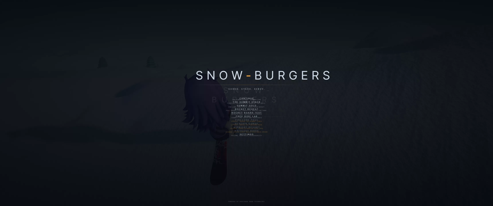
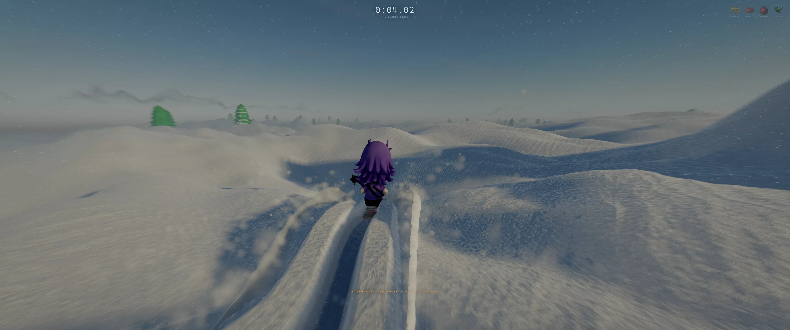
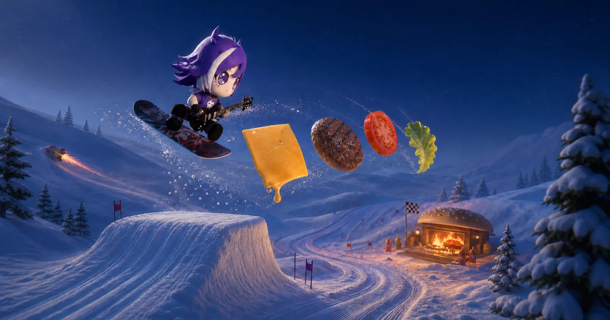

Current phase
Repository safety and the clean baseline are established. All twelve events complete in Windows Chrome/WebGPU with no console or GPU validation errors. Reliable frame-phase takeoff, analogue input parity, obstacle-aware and predictive camera, trusted signature-flight records, and the complete title/order/results/settings UI slice have cleared independent P1 critique. The adaptive-score core and validation-before-deploy mechanism also pass independent review. Asset-rights reconciliation, progression, accessibility, integration, and release acceptance remain active or open; no release recommendation has been made.
Workstreams
Baseline facts
| Area | Observed | Status |
|---|---|---|
| 01 | Six course records, twelve event records, eighteen authored tape placements. | Registry verified |
| 02 | Node 22.22.1, npm 10.9.4, Windows Chrome 151.0.7922.108. | Environment recorded |
| 03 | RTX 5080 16 GB and RTX 2080 8 GB visible through WSL; target measurements must name the GPU actually exercised. | Hardware recorded |
| 04 | Runtime assets total 22,713,084 tracked bytes. Thirteen Snow-Burgers/dressing GLBs and RockerKaki's remove.bg step retain rights caveats. | Release blocker |
| 05 | Clean detached baseline: npm ci, 90/90 tests, and production build pass. Current integrated candidate: 100/100 tests and build pass before the final responsive recheck. | Reproducible |
| 06 | All twelve events reached results in fresh Windows Chrome/WebGPU runs; zero console errors and zero WebGPU validation errors. | 12 / 12 complete |
| 07 | 2560×1440 presentation intervals: 2.3 ms median, 5.5 ms p95, 6.3 ms p99; 206 draws and 2,487,910 submitted triangles. GPU completion timing was unavailable. | Baseline measured |
| 08 | The playthrough formatter prints a misleading hard-coded /4 ingredient denominator; underlying report arrays are correct. | QA defect open |
| 09 | Fresh accepted classic 16:9/21:9 and rocket 16:9 runs report 2.53–2.54 s, 49.2–49.3 m, and 18.5–18.7 m clearance with visible grounded landing cues. | P1 accepted |
| 10 | Candidate Pages deployment now requires a successful main validation, checks out that exact SHA, and reruns strict release validation plus build. Branch pushes cannot deploy. | P1 accepted |
Before evidence
{kind=link}

{kind=link}

Candidate evidence · not yet accepted


{kind=link}



Critic log
| Pass | Artifact exercised | Largest defect | Disposition |
|---|---|---|---|
| C1 | Real 1280×720 and 3440×1440 title → order → run → pause, 2560×1440 results, then a focused simulated-pad recheck. | Controller focus initially excluded Settings ranges; all six now focus, adjust, dispatch the normal path, persist, and leave safely. | P1 accepted |
| A1 | Real Windows Chrome/WebGPU classic seeds 1–3 and rocket Big Air completion; direct clean/short/hard landing checks; 97 tests and build. | No remaining P0/P1 in the targeted launch/refuel slice. Persistent Big Air landing telemetry is still needed because a one-frame landing signal cannot support robust presentation or browser acceptance. | P1 slice accepted |
| B1 | Real WebGPU Big Air showcase, finish pixels, direct arch arm probe, source/unit/build review; later Windows probes timed out. | Obstacle arm is structurally sound, but the Big Air lip still hides the landing and lacks predictive active-control framing. | P1 follow-up required |
| F1 | Four-view pixels and Khronos validation for all thirteen replacement GLBs; generator rerun, anchor/source/report audit. | Several focal models read as primitives, five assets changed hashes on rerun, rocket anchors mismatch runtime, and authorship language overclaims the documented process. | Rejected · revise |
| C2 | Fresh 1280×720, 3440×1440, and 1024×576/125%-equivalent flows; keyboard/pad navigation; hint-mode probes; 100 tests and build. | At the closest zoom layout, controller focus can move to the below-fold Back action without scrolling it into view. | P1 accepted · P2 fix |
| H1 | Strict/report-only validators, workflow event/SHA/permissions audit, 107 tests and build. | Deploy is safely bound to a green exact main SHA, but hosted CI has no Playwright boot smoke and candidate hashes are not cross-checked. | P1 follow-up |
| H2 | Focused release tests, normal production-preview smoke, two synthetic fatal-error smokes, combined-report behavior, artifact path, build, and exact-SHA workflow recheck. | No remaining P0/P1 mechanism defect. Hosted software evidence proves boot/error presentation only; discrete WebGPU gameplay and frame-budget certification remain manual gates. | P1 accepted |
| C3 | Fresh 1280×720 title/order/results, 1024×576 keyboard/pad Settings, live 3440×1440 Big Air result fixture, 117 tests and build. | No C3 P0/P1 remains. A fresh native-ultrawide autopilot completion timed out, so existing gameplay pixels plus the live fixture cover presentation while that exact end-to-end capture remains a manual integration gate. | Accepted |
| C4 | Fresh 1280×720 first-PB, repeat-delta, and ordinary-event result fixtures; 640×360 stress pass; 35 focused tests. | No P0/P1 remains. The below-target 640×360 card scrolls and places Retry below its initial viewport; the required 1280×720 presentation fits fully. | Accepted |
| B4 | 45 focused gates; classic 16:9/21:9 and rocket 16:9 WebGPU completions; look/reduced-motion/Summit probes; landing-grounding and corrupt-save checks. | No P0/P1 remains. Ultrawide telemetry scale, two-run reload capture, and a full obstruction time series remain P2 evidence gaps. | Accepted |
| E3 | Real preview state trace, analyser spectra, 7 focused tests, 1,120 transition/update stress, 16,800 finite parameter writes, full build. | Core and existing runtime states pass. Finale/credits calls plus real Windows speaker/headphone loudness and masking review remain release gates. | Core accepted |
| F2 | Two clean Blender runs, 13 Khronos validations, safe-output refusal, runtime hash/mtime audit, 52 four-view renders, source/contracts/reports, and social-art derivative regeneration. | Determinism and provenance language pass. Rocket cargo is 0.30 m off its runtime anchor; seven focal models need revision; hut/village still read as placeholders; draw counts are stale. Six 3D candidates pass visual review subject to runtime smoke. | P1 correction active |
| A4 | 154 tests/build; nine-rate full-window and natural-lip sweeps; 90,000 randomized segment probes; false-launch, coyote, crash, pad-edge, disconnect, and allocation review. | The first correction missed far-edge authored-window crossings and was rejected. Segment-versus-lane intersection closes that defect with zero mismatches; physical-pad feel and close rail pixels remain integration gates. | Accepted |
Secondary C1 corrections are built: the lab hint now follows explicit mode/screen state, the title scope is registry-derived, and bounded native-ultrawide scaling preserves the 720p layout. H2 adds a deliberately narrow known-WebGPU-unavailable classifier: authored availability failures reach the product explanation, while unrelated device and buffer invariants fail CI. The combined report is emitted even on failure and the current asset/documentation failures remain visible release blockers.
Highest-impact open findings
The authoritative ranked list, evidence, correction, and acceptance check lives in PLAYTEST_FINDINGS.md. Current top items are the missing finale/credits, missing player-facing Burger Book, incomplete accessibility/control surface, unresolved central-asset rights, and final integration of progression/audio states.